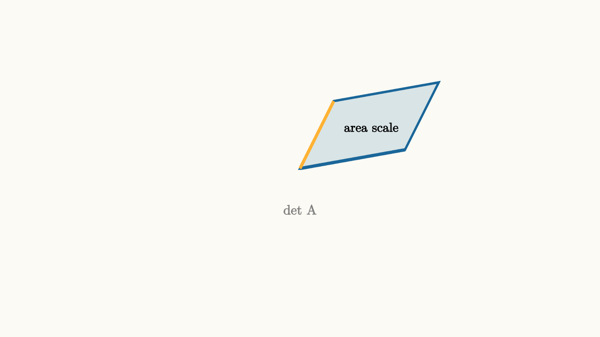

Area Tells How a Motion Scales Space
When a matrix moves the plane, it does more than move arrows. It changes area. The determinant measures the area scale factor.
Start with the unit square built from $e_1$ and $e_2$. After a linear transformation, that square becomes a parallelogram built from $T(e_1)$ and $T(e_2)$. The determinant is the signed area of that parallelogram.

source
background = [0.985, 0.98, 0.955, 1]
camera = Camera(4b)
mesh diagram = block {
. fill{alpha{0.15} BLUE} stroke{BLUE, 3} Polygon([[0, 0, 0], [1.4, 0.25, 0], [1.85, 1.15, 0], [0.45, 0.9, 0]])
. stroke{BLUE, 4} Line(start: [0, 0, 0], end: [1.4, 0.25, 0])
. stroke{ORANGE, 4} Line(start: [0, 0, 0], end: [0.45, 0.9, 0])
. center{[0.95, 0.55, 0]} color{BLACK} Text("area scale", 0.62)
. center{[0, -0.55, 0]} color{GRAY} Text("det A", 0.65)
}For
the formula is
The formula is compact, but the meaning is better: it is the signed area of the parallelogram with sides $(a,c)$ and $(b,d)$.
Positive determinant means orientation is preserved. A counterclockwise turn from the first basis vector to the second remains counterclockwise after the motion. Negative determinant means the plane flipped over. Zero determinant means area collapsed to zero, so the whole plane was squeezed onto a line or a point.
source
background = [0.985, 0.98, 0.955, 1]
camera = Camera(4b)
let Shape = |flip| block {
let y = 1.0 - 2.0 * flip
. fill{alpha{0.16} GREEN} stroke{GREEN, 3} Polygon([[0, 0, 0], [1.4, 0.2, 0], [1.75, y, 0], [0.35, y - 0.2, 0]])
. stroke{BLUE, 4} Line(start: [0, 0, 0], end: [1.4, 0.2, 0])
. stroke{ORANGE, 4} Line(start: [0, 0, 0], end: [0.35, y - 0.2, 0])
. center{[0, 1.65, 0]} color{BLACK} Text("orientation is part of area", 0.66)
}
"positive"
mesh p = Shape(flip: 0.0)
mesh label = center{[1.0, -0.55, 0]} color{GREEN} Text("positive det", 0.62)
play Grow(0.8)
play Fade(0.4)
"flip"
p.flip = 1.0
label = center{[1.0, -1.35, 0]} color{ORANGE} Text("negative det", 0.62)
play [Lerp(1.2, [&p]), Trans(0.8, [&label])]This area interpretation explains several facts at once.
If the determinant is 1, the motion preserves area. It may shear a square into a slanted parallelogram, but equal-area regions remain equal in area. A shear is a good example: it slides horizontal layers by amounts proportional to height. The shape leans, while its base and height stay the same.
If the determinant is 0, the two moved basis vectors are dependent. They point along the same line or one of them vanishes. The transformed "unit square" has no two-dimensional area. That means the matrix loses information. Different input points land on the same output point, so there can be no inverse motion.
If the determinant is negative, the motion includes a reflection-like flip. A right hand becomes a left hand. This signed part matters in geometry, physics, and change of variables because orientation can affect direction and winding.
The determinant is not mainly a number to compute by a rule. It is a measurement of how a linear motion treats two-dimensional size. Watch the unit square. Its image tells the story: stretched area, preserved area, flipped area, or collapsed area.